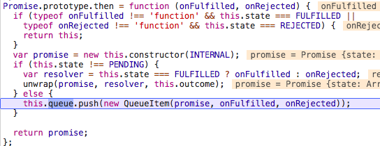
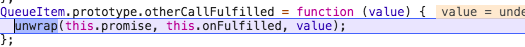

<!DOCTYPE html>
<html lang="en">
<head><meta name="generator" content="Hexo 3.8.0">
  <meta charset="utf-8">
  
  
  
    <meta name="description" content="forever young">
  
  <meta name="viewport" content="width=device-width, initial-scale=1, maximum-scale=1">
  <title>
    解析 Lie 库 Promise 源码 |
    
    xqyoung&#39;s blog</title>
  
    <link rel="shortcut icon" href="/favicon.ico">
  
  <link rel="stylesheet" href="/css/style.css">
  
    <link rel="stylesheet" href="/fancybox/jquery.fancybox.min.css">
  
  <script src="/js/pace.min.js"></script>
</head>
</html>
<body>
<main class="content">
  <section class="outer">
  <article id="post-promise-lie" class="article article-type-post" itemscope="" itemprop="blogPost" data-scroll-reveal="">

    <div class="article-inner">
        
            <header class="article-header">
                
  
    <h1 class="article-title" itemprop="name">
      解析 Lie 库 Promise 源码
    </h1>
  
  


            </header>
            

                
                    <div class="article-meta">
                        <a href="/2018/11/20/promise-lie/" class="article-date">
  <time datetime="2018-11-20T11:56:44.000Z" itemprop="datePublished">2018-11-20</time>
</a>
                            
  <div class="article-category">
    <a class="article-category-link" href="/categories/源码解析/">源码解析</a>
  </div>

                    </div>
                    

                        
                            
    <div class="tocbot"></div>


                                

                                    <div class="article-entry" itemprop="articleBody">
                                        


                                            

                                                
                                                                    <h2 id="Promise"><a href="#Promise" class="headerlink" title="Promise"></a>Promise</h2><h3 id="Promise-A"><a href="#Promise-A" class="headerlink" title="Promise/A+"></a>Promise/A+</h3><p>以下内容译自 Promise/A+ 规范。</p>
<p>Promise 代表一个异步操作的最终结果。操作一个 promise 的主要方式是通过它的 <code>then</code> 方法，该方法接收一个回调，回调参数是 promise 的最终值或这个 promise 转为 fulfilled 失败的原因。</p>
<h4 id="术语"><a href="#术语" class="headerlink" title="术语"></a>术语</h4><ul>
<li>“promies” 是一个对象或函数，并有一个符合规范的 <code>then</code> 方法</li>
<li>“thenable” 是一个定义 <code>then</code> 方法的对象或函数</li>
<li>“value” 是任何合法的 JavaScript 值（包括 <code>undefined</code> ，一个 thenable ，或一个 promise）</li>
<li>“exception” 是用 <code>throw</code> 声明抛出的值</li>
<li>“reason” 指明一个 promise 为什么被 rejected 。</li>
</ul>
<h4 id="条件"><a href="#条件" class="headerlink" title="条件"></a>条件</h4><h5 id="Promise-的状态"><a href="#Promise-的状态" class="headerlink" title="Promise 的状态"></a>Promise 的状态</h5><p>一个 promise 只能处于三种状态中的一种：<code>pending</code>, <code>fulfilled</code> 或 <code>rejected</code> 。</p>
<p>当 promise 处于 pending 时：</p>
<ul>
<li>可能转换为 fulfilled、 rejected 之一</li>
</ul>
<p>当 promise 处于 fulfilled 时：</p>
<ul>
<li>不可转换为其他状态</li>
<li>必须有一不可更改的 value</li>
</ul>
<p>当 promise 处于 rejected 时：</p>
<ul>
<li>不可转换为其他状态</li>
<li>必须有一个不可更改的 reason</li>
</ul>
<p>这里所说的“不可更改”，指的是自身不变性（比如 <code>===</code> ），但不需要遵循深层不可变性。</p>
<hr>
<h5 id="then-方法"><a href="#then-方法" class="headerlink" title="then 方法"></a><code>then</code> 方法</h5><p>promise 必须提供一个 <code>then</code> 方法，用以访问当前的/最终的 value 或 reason 。</p>
<p><code>then</code> 方法接收两个参数：</p>
<figure class="highlight javascript"><table><tr><td class="gutter"><pre><span class="line">1</span><br></pre></td><td class="code"><pre><span class="line">promise.then(onFulfilled, OnRejected)</span><br></pre></td></tr></table></figure>
<p><code>onFulfilled</code> 和 <code>onRejected</code> 都是可选参数</p>
<ul>
<li>如果 <code>onFulfilled</code> 不是函数，忽略</li>
<li>如果 <code>onRejected</code> 不是函数，忽略</li>
</ul>
<p>如果 <code>onFulfulled</code> 是函数</p>
<ul>
<li>它必须在 <code>promise</code> 转换为 fulfilled 之后调用，第一个参数是 <code>promise</code> 的 value</li>
<li>不可以在 <code>promise</code> 转换为 fulfilled 之前调用</li>
<li>不可以被调用一次以上</li>
</ul>
<p>如果 <code>onRejected</code> 是函数</p>
<ul>
<li>它必须在 <code>promise</code> 转换为 rejected 之后调用，第一个参数是 <code>promise</code> 的 reason</li>
<li>不可以在 <code>promise</code> 转换为 rejected 之前调用</li>
<li>不可以被调用一次以上</li>
</ul>
<p>当且仅的<a href="https://es5.github.io/#x10.3" target="_blank" rel="noopener">执行上下文</a>栈只包含<a href="https://promisesaplus.com/#notes" target="_blank" rel="noopener">平台代码</a> <code>onFulfilled</code> 和 <code>onRejected</code> 被调用</p>
<p><code>onFulfilled</code> 和 <code>onRejected</code> 必须以函数的形式调用（不能有 <code>this</code> ，严格模式下 <code>this</code> 为 <code>undefined</code> ，非严格模式下 <code>this</code> 指向 <code>global</code> 对象）。</p>
<p><code>then</code> 可能在同个 promise 上多次调用</p>
<ul>
<li>如果/当 promise 转换为 fulfilled ，所有对应的 <code>onFulfilled</code> 回调会按照 <code>then</code> 发起的顺序调用。</li>
<li>如果/当 promise 转换为 rejected ，所有对应的 <code>onRejected</code> 回调会按照 <code>then</code> 发起的顺序调用。</li>
</ul>
<p><code>then</code> 必须返回一个 promise</p>
<figure class="highlight javascript"><table><tr><td class="gutter"><pre><span class="line">1</span><br></pre></td><td class="code"><pre><span class="line">promise2 = promise1.then(onFulfilled, onRejected);</span><br></pre></td></tr></table></figure>
<ul>
<li><code>onFulfilled</code> 或 <code>onRejected</code> 之一返回一个 value ，则执行 Promise Resolution Procedure <code>[[Resolve]](promise2, x)</code> </li>
<li><code>onFulfilled</code> 或 <code>onRejected</code> 之一抛出一个异常 <code>e</code> ，<code>promise2</code> 必须被 rejected ，并且将  <code>e</code> 作为 reason 传入</li>
<li>如果 <code>onFulfilled</code> 不是一个函数而且 <code>promise1</code> 转换为 fulfilled ，<code>promise2</code> 必须转换为 fulfilled ，并且将 <code>promise1</code> 的 value 传入。</li>
<li>如果 <code>onRejected</code> 不是一个函数而且 <code>promise1</code> 转换为 rejected ，<code>promise2</code> 必须转换为 rejected ，并且将 <code>promise1</code> 的 reason 传入。</li>
</ul>
<hr>
<h5 id="Promise-Resolution-Procedure"><a href="#Promise-Resolution-Procedure" class="headerlink" title="Promise Resolution Procedure"></a>Promise Resolution Procedure</h5><p><strong>Promise Resolution Procedure</strong> 是一个抽象的操作，输入是一个 promise 和一个 value ， 我们用 <code>[[Resolve]](promise, x)</code> 表示，如果 <code>x</code> 是 thenable 的，它做此尝试：在 <code>x</code> 表现得像一个 promise 的前提下，让  <code>promise</code> 采用 <code>x</code> 的状态( <code>state</code> )。否则将 <code>promise</code> 的状态转换为 fulfilled ，<code>x</code> 作为 value 。</p>
<p>执行 <code>[[Resolve]](promise, x)</code> ，会执行以下步骤：</p>
<p>如果 <code>promise</code> 和 <code>x</code> 指向同个对象，以一个 <code>TypeError</code> 为 reason ，拒绝这个 <code>promise</code> 。</p>
<ol>
<li><p>如果 <code>x</code> 是一个 promise ，采用它的 state</p>
<ul>
<li>如果 <code>x</code> 处于 pending 中，<code>promise</code> 必须保持 pending 直至 <code>x</code> 转换为 fulfilled 或 rejected </li>
<li>如果/当 <code>x</code> 转换为 fulfilled ，以相同的 value ，履行这个 <code>promise</code> （fulfill <code>promise</code> with the same value）</li>
<li>如果/当 <code>x</code> 转换为 rejected ，以相同的 reason ，拒绝这个 <code>promise</code> （reject <code>promise</code> with the same reason）</li>
</ul>
</li>
</ol>
<ol start="2">
<li><p>如果 x 是一个对象或者函数</p>
<ul>
<li>令 <code>then</code> = <code>x.then</code></li>
<li>如果访问 <code>x.then</code> 会抛出一个异常 <code>e</code> ，以 <code>e</code> 为 reason 拒绝这个 promise </li>
<li>如果 then 是一个函数，将它的 <code>this</code> 绑定为 <code>x</code> 并调用它，第一个参数是 <code>resolvePromise</code> ，第二个参数是 <code>rejectedPromise</code> 。</li>
</ul>
</li>
</ol>
<figure class="highlight javascript"><table><tr><td class="gutter"><pre><span class="line">1</span><br></pre></td><td class="code"><pre><span class="line">then.call(x, resolvePromise, rejectedPromise)</span><br></pre></td></tr></table></figure>
<p>如果 <code>resolvePromise</code> 调用，调用返回值是 <code>y</code> ，执行 <code>[[Resolve]](promise, y)</code></p>
<p>如果 <code>rejectedPromise</code> 调用，调用返回值是 <code>r</code> ，以 <code>r</code> 为由拒绝 <code>promise</code> </p>
<p>如果 <code>resolvePromise</code> <code>rejectedPromise</code> 都被调用，或者以相同参数多次调用，则只采用第一次调用，忽略其他调用</p>
<p>如果调用 then 抛出一个异常 e ：</p>
<p>如果 <code>resolvePromise</code> <code>rejectedPromise</code> 都已经被调用，忽略 e </p>
<p>否则，以 <code>e</code> 为 reason 拒绝这个 <code>promise</code> </p>
<ul>
<li>如果 <code>then</code> 不是一个函数，以 <code>x</code> 履行这个 <code>promise</code> （fulfill promise with x）</li>
</ul>
<ol start="3">
<li>如果 x 既不是函数也不是对象，以 <code>x</code> 履行这个 <code>promise</code> （fulfill promise with x）</li>
</ol>
<h3 id="解析-lie-库的-Promise-实现"><a href="#解析-lie-库的-Promise-实现" class="headerlink" title="解析 lie 库的 Promise 实现"></a>解析 lie 库的 Promise 实现</h3><h4 id="状态"><a href="#状态" class="headerlink" title="状态"></a>状态</h4><p>Promise 任何实例 promise （接下来用 promise 指代 Promise 实例）在一个时刻，只能是三种状态之一：</p>
<figure class="highlight javascript"><table><tr><td class="gutter"><pre><span class="line">1</span><br><span class="line">2</span><br><span class="line">3</span><br></pre></td><td class="code"><pre><span class="line"><span class="keyword">var</span> REJECTED = [<span class="string">'REJECTED'</span>];</span><br><span class="line"><span class="keyword">var</span> FULFILLED = [<span class="string">'FULFILLED'</span>];</span><br><span class="line"><span class="keyword">var</span> PENDING = [<span class="string">'PENDING'</span>];</span><br></pre></td></tr></table></figure>
<h4 id="Promise-构造函数"><a href="#Promise-构造函数" class="headerlink" title="Promise 构造函数"></a>Promise 构造函数</h4><figure class="highlight javascript"><table><tr><td class="gutter"><pre><span class="line">1</span><br><span class="line">2</span><br><span class="line">3</span><br><span class="line">4</span><br><span class="line">5</span><br><span class="line">6</span><br><span class="line">7</span><br><span class="line">8</span><br><span class="line">9</span><br><span class="line">10</span><br></pre></td><td class="code"><pre><span class="line"><span class="keyword">var</span> p1 = <span class="keyword">new</span> <span class="built_in">Promise</span>(<span class="function"><span class="keyword">function</span> (<span class="params">resolve, reject</span>) </span>&#123;</span><br><span class="line">	<span class="built_in">console</span>.log(<span class="number">1</span>);</span><br><span class="line">	resolve(<span class="number">4</span>);</span><br><span class="line">	<span class="built_in">console</span>.log(<span class="number">2</span>)</span><br><span class="line">&#125;);</span><br><span class="line">p1.then(<span class="function"><span class="params">num</span> =&gt;</span> &#123;</span><br><span class="line">	<span class="built_in">console</span>.log(num);</span><br><span class="line">&#125;)</span><br><span class="line"></span><br><span class="line"><span class="built_in">console</span>.log(<span class="number">3</span>);</span><br></pre></td></tr></table></figure>
<p>输出结果是 1234 。入参的匿名函数似乎是立刻执行的（ 1，2 最先被打印），但是 resolve 之后没有立刻 then ，而是先执行完所有同步代码（打印 3 ），再去调用一个回调（打印 4 ）。</p>
<p>看一下 Promise 的构造函数</p>
<figure class="highlight javascript"><table><tr><td class="gutter"><pre><span class="line">1</span><br><span class="line">2</span><br><span class="line">3</span><br><span class="line">4</span><br><span class="line">5</span><br><span class="line">6</span><br><span class="line">7</span><br><span class="line">8</span><br><span class="line">9</span><br><span class="line">10</span><br><span class="line">11</span><br></pre></td><td class="code"><pre><span class="line"><span class="function"><span class="keyword">function</span> <span class="title">Promise</span>(<span class="params">resolver</span>) </span>&#123;</span><br><span class="line">  <span class="keyword">if</span> (<span class="keyword">typeof</span> resolver !== <span class="string">'function'</span>) &#123;</span><br><span class="line">    <span class="keyword">throw</span> <span class="keyword">new</span> <span class="built_in">TypeError</span>(<span class="string">'resolver must be a function'</span>);</span><br><span class="line">  &#125;</span><br><span class="line">  <span class="keyword">this</span>.state = PENDING;</span><br><span class="line">  <span class="keyword">this</span>.queue = [];</span><br><span class="line">  <span class="keyword">this</span>.outcome = <span class="keyword">void</span> <span class="number">0</span>;</span><br><span class="line">  <span class="keyword">if</span> (resolver !== INTERNAL) &#123;</span><br><span class="line">    safelyResolveThenable(<span class="keyword">this</span>, resolver);</span><br><span class="line">  &#125;</span><br><span class="line">&#125;</span><br></pre></td></tr></table></figure>
<p>新创建的 promise 的状态，会被初始化为 PENDING 。入参 resolver 就是 <code>function(resolve, reject) { // ... }</code> 这样的一个函数，看一下 <code>safelyResolveThenable(this, resolver)</code> 做了什么。</p>
<figure class="highlight javascript"><table><tr><td class="gutter"><pre><span class="line">1</span><br><span class="line">2</span><br><span class="line">3</span><br><span class="line">4</span><br><span class="line">5</span><br><span class="line">6</span><br><span class="line">7</span><br><span class="line">8</span><br><span class="line">9</span><br><span class="line">10</span><br><span class="line">11</span><br><span class="line">12</span><br><span class="line">13</span><br><span class="line">14</span><br><span class="line">15</span><br><span class="line">16</span><br><span class="line">17</span><br><span class="line">18</span><br><span class="line">19</span><br><span class="line">20</span><br><span class="line">21</span><br><span class="line">22</span><br><span class="line">23</span><br><span class="line">24</span><br><span class="line">25</span><br><span class="line">26</span><br><span class="line">27</span><br><span class="line">28</span><br></pre></td><td class="code"><pre><span class="line"><span class="function"><span class="keyword">function</span> <span class="title">safelyResolveThenable</span>(<span class="params">self, thenable</span>) </span>&#123;</span><br><span class="line">  <span class="comment">// Either fulfill, reject or reject with error</span></span><br><span class="line">  <span class="keyword">var</span> called = <span class="literal">false</span>;</span><br><span class="line">  <span class="function"><span class="keyword">function</span> <span class="title">onError</span>(<span class="params">value</span>) </span>&#123;</span><br><span class="line">    <span class="keyword">if</span> (called) &#123;</span><br><span class="line">      <span class="keyword">return</span>;</span><br><span class="line">    &#125;</span><br><span class="line">    called = <span class="literal">true</span>;</span><br><span class="line">    handlers.reject(self, value);</span><br><span class="line">  &#125;</span><br><span class="line"></span><br><span class="line">  <span class="function"><span class="keyword">function</span> <span class="title">onSuccess</span>(<span class="params">value</span>) </span>&#123;</span><br><span class="line">    <span class="keyword">if</span> (called) &#123;</span><br><span class="line">      <span class="keyword">return</span>;</span><br><span class="line">    &#125;</span><br><span class="line">    called = <span class="literal">true</span>;</span><br><span class="line">    handlers.resolve(self, value);</span><br><span class="line">  &#125;</span><br><span class="line"></span><br><span class="line">  <span class="function"><span class="keyword">function</span> <span class="title">tryToUnwrap</span>(<span class="params"></span>) </span>&#123;</span><br><span class="line">    thenable(onSuccess, onError);</span><br><span class="line">  &#125;</span><br><span class="line"></span><br><span class="line">  <span class="keyword">var</span> result = tryCatch(tryToUnwrap);</span><br><span class="line">  <span class="keyword">if</span> (result.status === <span class="string">'error'</span>) &#123;</span><br><span class="line">    onError(result.value);</span><br><span class="line">  &#125;</span><br><span class="line">&#125;</span><br></pre></td></tr></table></figure>
<p>这里的 thenable 就是传进来的 resolver 。可以看到 thenable 被调用：<code>var result = tryCatch(tryToUnwrap);</code> ，<br>tryCatch 其实是一个帮助函数，封装了 <code>func(value)</code> 的返回结果。</p>
<figure class="highlight javascript"><table><tr><td class="gutter"><pre><span class="line">1</span><br><span class="line">2</span><br><span class="line">3</span><br><span class="line">4</span><br><span class="line">5</span><br><span class="line">6</span><br><span class="line">7</span><br><span class="line">8</span><br><span class="line">9</span><br><span class="line">10</span><br><span class="line">11</span><br></pre></td><td class="code"><pre><span class="line"><span class="function"><span class="keyword">function</span> <span class="title">tryCatch</span>(<span class="params">func, value</span>) </span>&#123;</span><br><span class="line">  <span class="keyword">var</span> out = &#123;&#125;;</span><br><span class="line">  <span class="keyword">try</span> &#123;</span><br><span class="line">    out.value = func(value);</span><br><span class="line">    out.status = <span class="string">'success'</span>;</span><br><span class="line">  &#125; <span class="keyword">catch</span> (e) &#123;</span><br><span class="line">    out.status = <span class="string">'error'</span>;</span><br><span class="line">    out.value = e;</span><br><span class="line">  &#125;</span><br><span class="line">  <span class="keyword">return</span> out;</span><br><span class="line">&#125;</span><br></pre></td></tr></table></figure>
<p>thenable 执行环境中，以下三个语句按顺序执行。</p>
<figure class="highlight javascript"><table><tr><td class="gutter"><pre><span class="line">1</span><br><span class="line">2</span><br><span class="line">3</span><br></pre></td><td class="code"><pre><span class="line"><span class="built_in">console</span>.log(<span class="number">1</span>);</span><br><span class="line">resolve(<span class="number">4</span>);</span><br><span class="line"><span class="built_in">console</span>.log(<span class="number">2</span>)</span><br></pre></td></tr></table></figure>
<p>重点看一下 <code>resolve(4)</code> ，打断点，最终来到 handlers.resolve </p>
<figure class="highlight javascript"><table><tr><td class="gutter"><pre><span class="line">1</span><br><span class="line">2</span><br><span class="line">3</span><br><span class="line">4</span><br><span class="line">5</span><br><span class="line">6</span><br><span class="line">7</span><br><span class="line">8</span><br><span class="line">9</span><br><span class="line">10</span><br><span class="line">11</span><br><span class="line">12</span><br><span class="line">13</span><br><span class="line">14</span><br><span class="line">15</span><br><span class="line">16</span><br><span class="line">17</span><br><span class="line">18</span><br><span class="line">19</span><br><span class="line">20</span><br></pre></td><td class="code"><pre><span class="line">handlers.resolve = <span class="function"><span class="keyword">function</span> (<span class="params">self, value</span>) </span>&#123;</span><br><span class="line">  <span class="keyword">var</span> result = tryCatch(getThen, value);</span><br><span class="line">  <span class="keyword">if</span> (result.status === <span class="string">'error'</span>) &#123;</span><br><span class="line">    <span class="keyword">return</span> handlers.reject(self, result.value);</span><br><span class="line">  &#125;</span><br><span class="line">  <span class="keyword">var</span> thenable = result.value;</span><br><span class="line"></span><br><span class="line">  <span class="keyword">if</span> (thenable) &#123;</span><br><span class="line">    safelyResolveThenable(self, thenable);</span><br><span class="line">  &#125; <span class="keyword">else</span> &#123;</span><br><span class="line">    self.state = FULFILLED;</span><br><span class="line">    self.outcome = value;</span><br><span class="line">    <span class="keyword">var</span> i = <span class="number">-1</span>;</span><br><span class="line">    <span class="keyword">var</span> len = self.queue.length;</span><br><span class="line">    <span class="keyword">while</span> (++i &lt; len) &#123;</span><br><span class="line">      self.queue[i].callFulfilled(value);</span><br><span class="line">    &#125;</span><br><span class="line">  &#125;</span><br><span class="line">  <span class="keyword">return</span> self;</span><br><span class="line">&#125;;</span><br></pre></td></tr></table></figure>
<p>这里 <code>self = p1</code> ，<code>value = 4</code> ，value 不是一个 thenable 类型（如果是 thenable 的处理？）。最后把 self 的 state 设为 FULFILLED ，把 outcome 赋值为 value ，返回 self 。</p>
<p>其实执行完 <code>resolve(4)</code> ，p1 的状态已经变为 FULFILLED ，并且有一个不可变的 value 。</p>
<h4 id="Promise-prototype-then"><a href="#Promise-prototype-then" class="headerlink" title="Promise.prototype.then"></a>Promise.prototype.then</h4><p>then 方法的最主要作用，是访问一个 promise 最终的 value，或者 reason 。</p>
<figure class="highlight javascript"><table><tr><td class="gutter"><pre><span class="line">1</span><br><span class="line">2</span><br><span class="line">3</span><br><span class="line">4</span><br><span class="line">5</span><br><span class="line">6</span><br><span class="line">7</span><br><span class="line">8</span><br><span class="line">9</span><br><span class="line">10</span><br><span class="line">11</span><br><span class="line">12</span><br><span class="line">13</span><br><span class="line">14</span><br><span class="line">15</span><br><span class="line">16</span><br><span class="line">17</span><br><span class="line">18</span><br><span class="line">19</span><br><span class="line">20</span><br><span class="line">21</span><br><span class="line">22</span><br><span class="line">23</span><br></pre></td><td class="code"><pre><span class="line"><span class="built_in">Promise</span>.prototype.then = <span class="function"><span class="keyword">function</span> (<span class="params">onFulfilled, onRejected</span>) </span>&#123;</span><br><span class="line">  <span class="comment">// 如果 onFulfilled, onRejected 不是函数，忽略，同时实现透传，即</span></span><br><span class="line">  <span class="comment">// Promise.then().then(num =&gt; &#123;console.log(num);&#125;)</span></span><br><span class="line">  <span class="keyword">if</span> (<span class="keyword">typeof</span> onFulfilled !== <span class="string">'function'</span> &amp;&amp; <span class="keyword">this</span>.state === FULFILLED ||</span><br><span class="line">    <span class="keyword">typeof</span> onRejected !== <span class="string">'function'</span> &amp;&amp; <span class="keyword">this</span>.state === REJECTED) &#123;</span><br><span class="line">    <span class="keyword">return</span> <span class="keyword">this</span>;</span><br><span class="line">  &#125;</span><br><span class="line"></span><br><span class="line">  <span class="comment">// 返回结果是一个 promise ，为了和当前的 promise（即 this） 区分，命名为 promise2</span></span><br><span class="line">  <span class="keyword">var</span> promise2 = <span class="keyword">new</span> <span class="keyword">this</span>.constructor(INTERNAL);</span><br><span class="line">  <span class="keyword">if</span> (<span class="keyword">this</span>.state !== PENDING) &#123;</span><br><span class="line">  	<span class="comment">// 只有 promise 的 state 不是 PENDING 时，才会调用 onFulfilled 或者 onRejected</span></span><br><span class="line">  	<span class="comment">// 当状态为 FULFILLED 时，调用 onFulfilled ，并把 promise 的 value 传递给 onFulfilled</span></span><br><span class="line">  	<span class="comment">// 当状态为 REJECTED 时，调用 onRejected ，并把 promise 的 reason 传递给 onRejected</span></span><br><span class="line">    <span class="keyword">var</span> resolver = <span class="keyword">this</span>.state === FULFILLED ? onFulfilled : onRejected;</span><br><span class="line">    unwrap(promise2, resolver, <span class="keyword">this</span>.outcome);</span><br><span class="line">  &#125; <span class="keyword">else</span> &#123;</span><br><span class="line">  	<span class="comment">// promise 的 state 为 PENDING ，把 promise2，onFulfilled 和 onRejected 包装成一个 QueueItem，</span></span><br><span class="line">  	<span class="comment">// 压入 promise 的 queue</span></span><br><span class="line">    <span class="keyword">this</span>.queue.push(<span class="keyword">new</span> QueueItem(promise2, onFulfilled, onRejected));</span><br><span class="line">  &#125;</span><br><span class="line">  <span class="keyword">return</span> promise;</span><br><span class="line">&#125;</span><br></pre></td></tr></table></figure>
<h4 id="nextTick-实现"><a href="#nextTick-实现" class="headerlink" title="nextTick 实现"></a>nextTick 实现</h4><p>then 方法有链式传递，前一个 promise 的 value 或 reason 会传递给下一个 promise ， <code>promise.then(onFulfilled, onRejected)</code> ，真正在操作 value 和 reason 的其实是新的 promise（promise2）。</p>
<figure class="highlight javascript"><table><tr><td class="gutter"><pre><span class="line">1</span><br><span class="line">2</span><br><span class="line">3</span><br><span class="line">4</span><br><span class="line">5</span><br><span class="line">6</span><br><span class="line">7</span><br><span class="line">8</span><br><span class="line">9</span><br><span class="line">10</span><br><span class="line">11</span><br><span class="line">12</span><br><span class="line">13</span><br><span class="line">14</span><br><span class="line">15</span><br><span class="line">16</span><br><span class="line">17</span><br><span class="line">18</span><br><span class="line">19</span><br></pre></td><td class="code"><pre><span class="line"><span class="function"><span class="keyword">function</span> <span class="title">unwrap</span>(<span class="params">promise, func, value</span>) </span>&#123;</span><br><span class="line">  immediate(<span class="function"><span class="keyword">function</span> (<span class="params"></span>) </span>&#123;</span><br><span class="line">    <span class="keyword">var</span> returnValue;</span><br><span class="line">    <span class="keyword">try</span> &#123;</span><br><span class="line">      <span class="comment">// 新的 promise 的状态是变为 FULFILLED 还是 REJECTED，和它处理的是 value 还是 reason 没有必然联系，</span></span><br><span class="line">      <span class="comment">// 也就是说它的状态转换不受前一个 promise 的状态影响，它只根据前一个 promise 提供的 value/reason，分别调用自己不同的处理方法</span></span><br><span class="line">      <span class="comment">// 如果处理成功，比如成功处理前一个 promise 传过来的 reason ，那么新的 promise 会被 resolve</span></span><br><span class="line">      <span class="comment">// 否则 reject</span></span><br><span class="line">      returnValue = func(value);</span><br><span class="line">    &#125; <span class="keyword">catch</span> (e) &#123;</span><br><span class="line">      <span class="keyword">return</span> handlers.reject(promise, e);</span><br><span class="line">    &#125;</span><br><span class="line">    <span class="keyword">if</span> (returnValue === promise) &#123;</span><br><span class="line">      handlers.reject(promise, <span class="keyword">new</span> <span class="built_in">TypeError</span>(<span class="string">'Cannot resolve promise with itself'</span>));</span><br><span class="line">    &#125; <span class="keyword">else</span> &#123;</span><br><span class="line">      handlers.resolve(promise, returnValue);</span><br><span class="line">    &#125;</span><br><span class="line">  &#125;);</span><br><span class="line">&#125;</span><br></pre></td></tr></table></figure>
<p><code>immediate</code> 注册一个异步方法，使得：当且仅当执行上下文只有平台代码的时候，执行 then 的回调 onFulfilled 或 onRejected 。类似 setTimeout 0 ，但又不仅仅如此。</p>
<figure class="highlight javascript"><table><tr><td class="gutter"><pre><span class="line">1</span><br><span class="line">2</span><br><span class="line">3</span><br><span class="line">4</span><br><span class="line">5</span><br></pre></td><td class="code"><pre><span class="line"><span class="function"><span class="keyword">function</span> <span class="title">immediate</span>(<span class="params">task</span>) </span>&#123;</span><br><span class="line">  <span class="keyword">if</span> (queue.push(task) === <span class="number">1</span> &amp;&amp; !draining) &#123;</span><br><span class="line">    scheduleDrain();</span><br><span class="line">  &#125;</span><br><span class="line">&#125;</span><br></pre></td></tr></table></figure>
<p>其中 <code>queue</code> <code>draining</code> 是闭包中可以访问的变量。queue 用以保存回调，以便按序执行，draining 标记当前是否有回调执行。</p>
<figure class="highlight javascript"><table><tr><td class="gutter"><pre><span class="line">1</span><br><span class="line">2</span><br></pre></td><td class="code"><pre><span class="line"><span class="keyword">var</span> draining;</span><br><span class="line"><span class="keyword">var</span> queue = [];</span><br></pre></td></tr></table></figure>
<p>只有在当前仅有一个任务 task ，并且之前的任务已经全部执行完毕（draining === false），才会调用 <code>scheduleDrain()</code> 。</p>
<figure class="highlight javascript"><table><tr><td class="gutter"><pre><span class="line">1</span><br><span class="line">2</span><br><span class="line">3</span><br><span class="line">4</span><br><span class="line">5</span><br><span class="line">6</span><br><span class="line">7</span><br><span class="line">8</span><br><span class="line">9</span><br><span class="line">10</span><br><span class="line">11</span><br><span class="line">12</span><br><span class="line">13</span><br><span class="line">14</span><br><span class="line">15</span><br><span class="line">16</span><br><span class="line">17</span><br><span class="line">18</span><br><span class="line">19</span><br><span class="line">20</span><br><span class="line">21</span><br><span class="line">22</span><br><span class="line">23</span><br><span class="line">24</span><br><span class="line">25</span><br><span class="line">26</span><br><span class="line">27</span><br><span class="line">28</span><br><span class="line">29</span><br><span class="line">30</span><br><span class="line">31</span><br><span class="line">32</span><br><span class="line">33</span><br><span class="line">34</span><br><span class="line">35</span><br><span class="line">36</span><br><span class="line">37</span><br><span class="line">38</span><br><span class="line">39</span><br><span class="line">40</span><br><span class="line">41</span><br><span class="line">42</span><br><span class="line">43</span><br><span class="line">44</span><br></pre></td><td class="code"><pre><span class="line"><span class="keyword">var</span> Mutation = global.MutationObserver || global.WebKitMutationObserver;</span><br><span class="line"></span><br><span class="line">&#123;</span><br><span class="line">  <span class="comment">// 浏览器环境 IE11+ 支持，使用 MutationObserver</span></span><br><span class="line">  <span class="keyword">if</span> (Mutation) &#123;</span><br><span class="line">    <span class="keyword">var</span> called = <span class="number">0</span>;</span><br><span class="line">    <span class="keyword">var</span> observer = <span class="keyword">new</span> Mutation(nextTick);</span><br><span class="line">    <span class="keyword">var</span> element = global.document.createTextNode(<span class="string">''</span>);</span><br><span class="line">    observer.observe(element, &#123;</span><br><span class="line">      characterData: <span class="literal">true</span></span><br><span class="line">    &#125;);</span><br><span class="line">    scheduleDrain = <span class="function"><span class="keyword">function</span> (<span class="params"></span>) </span>&#123;</span><br><span class="line">      element.data = (called = ++called % <span class="number">2</span>); <span class="comment">// called 的值在 0/1 之间切换</span></span><br><span class="line">    &#125;;</span><br><span class="line">  <span class="comment">// Node.js 环境，使用 MessageChannel</span></span><br><span class="line">  &#125; <span class="keyword">else</span> <span class="keyword">if</span> (!global.setImmediate &amp;&amp; <span class="keyword">typeof</span> global.MessageChannel !== <span class="string">'undefined'</span>) &#123;</span><br><span class="line">    <span class="keyword">var</span> channel = <span class="keyword">new</span> global.MessageChannel();</span><br><span class="line">    channel.port1.onmessage = nextTick;</span><br><span class="line">    scheduleDrain = <span class="function"><span class="keyword">function</span> (<span class="params"></span>) </span>&#123;</span><br><span class="line">      channel.port2.postMessage(<span class="number">0</span>);</span><br><span class="line">    &#125;;</span><br><span class="line">  <span class="comment">// 低版本浏览器，使用一个 script 标签，当它插入文档中，它的 readystatechange 事件会触发</span></span><br><span class="line">  &#125; <span class="keyword">else</span> <span class="keyword">if</span> (<span class="string">'document'</span> <span class="keyword">in</span> global &amp;&amp; <span class="string">'onreadystatechange'</span> <span class="keyword">in</span> global.document.createElement(<span class="string">'script'</span>)) &#123;</span><br><span class="line">    scheduleDrain = <span class="function"><span class="keyword">function</span> (<span class="params"></span>) </span>&#123;</span><br><span class="line"></span><br><span class="line">      <span class="comment">// Create a &lt;script&gt; element; its readystatechange event will be fired asynchronously once it is inserted</span></span><br><span class="line">      <span class="comment">// into the document. Do so, thus queuing up the task. Remember to clean up once it's been called.</span></span><br><span class="line">      <span class="keyword">var</span> scriptEl = global.document.createElement(<span class="string">'script'</span>);</span><br><span class="line">      scriptEl.onreadystatechange = <span class="function"><span class="keyword">function</span> (<span class="params"></span>) </span>&#123;</span><br><span class="line">        nextTick();</span><br><span class="line"></span><br><span class="line">        scriptEl.onreadystatechange = <span class="literal">null</span>;</span><br><span class="line">        scriptEl.parentNode.removeChild(scriptEl);</span><br><span class="line">        scriptEl = <span class="literal">null</span>;</span><br><span class="line">      &#125;;</span><br><span class="line">      global.document.documentElement.appendChild(scriptEl);</span><br><span class="line">    &#125;;</span><br><span class="line">  <span class="comment">// 最后什么都不行，用 setTimeout 0</span></span><br><span class="line">  &#125; <span class="keyword">else</span> &#123;</span><br><span class="line">    scheduleDrain = <span class="function"><span class="keyword">function</span> (<span class="params"></span>) </span>&#123;</span><br><span class="line">      setTimeout(nextTick, <span class="number">0</span>);</span><br><span class="line">    &#125;;</span><br><span class="line">  &#125;</span><br><span class="line">&#125;</span><br></pre></td></tr></table></figure>
<p>scheduleDrain 的根本目的，是尽可能较快，异步触发 nextTick 。以下是几种方案：</p>
<p>使用 <a href="https://developer.mozilla.org/zh-CN/docs/Web/API/MutationObserver" target="_blank" rel="noopener">MutationObserver</a> 监控一个空文本节点，每次调用 scheduleDrain 之后会把 called 的值从 0 改为 1（或从 1 改回 0）。改变这个 DOM 节点会触发<br><code>new Mutation(nextTick)</code> 注册的回调。这种回调的执行顺序会比 setTimeout 快。</p>
<p>使用<a href="https://developer.mozilla.org/zh-CN/docs/Web/API/MessageChannel" target="_blank" rel="noopener">MessageChannel</a>，port1 的 message 事件触发时候，调用 nextTick 回调。scheduleDrain 执行时，通过 <code>port2.postMessage</code> 触发 port1 的 message 事件。</p>
<p>低版本浏览器用一个动态插入的 script 标签，它的 readystatechange 事件会触发，触发的结果就是立即执行 nextTick 。这种“事件触发调用 nextTick” 的思想和前面两种方法很接近，但是用 script 标签要注意，在 readystatechange 事件最后要移除 script 标签。</p>
<p>最后，如果以上三种方案都不支持，用 setTimeout 0 。</p>
<figure class="highlight javascript"><table><tr><td class="gutter"><pre><span class="line">1</span><br><span class="line">2</span><br><span class="line">3</span><br><span class="line">4</span><br><span class="line">5</span><br><span class="line">6</span><br><span class="line">7</span><br><span class="line">8</span><br><span class="line">9</span><br><span class="line">10</span><br><span class="line">11</span><br><span class="line">12</span><br><span class="line">13</span><br><span class="line">14</span><br><span class="line">15</span><br></pre></td><td class="code"><pre><span class="line"><span class="function"><span class="keyword">function</span> <span class="title">nextTick</span>(<span class="params"></span>) </span>&#123;</span><br><span class="line">  draining = <span class="literal">true</span>;</span><br><span class="line">  <span class="keyword">var</span> i, oldQueue;</span><br><span class="line">  <span class="keyword">var</span> len = queue.length;</span><br><span class="line">  <span class="keyword">while</span> (len) &#123;</span><br><span class="line">    oldQueue = queue;</span><br><span class="line">    queue = [];</span><br><span class="line">    i = <span class="number">-1</span>;</span><br><span class="line">    <span class="keyword">while</span> (++i &lt; len) &#123;</span><br><span class="line">      oldQueue[i]();</span><br><span class="line">    &#125;</span><br><span class="line">    len = queue.length;</span><br><span class="line">  &#125;</span><br><span class="line">  draining = <span class="literal">false</span>;</span><br><span class="line">&#125;</span><br></pre></td></tr></table></figure>
<p>nextTick 按 queue 中 回调的顺序，逐个执行回调，执行完之后把 draining 重置为 false 。</p>
<p>看一下这段代码的执行结果：</p>
<figure class="highlight javascript"><table><tr><td class="gutter"><pre><span class="line">1</span><br><span class="line">2</span><br><span class="line">3</span><br><span class="line">4</span><br><span class="line">5</span><br><span class="line">6</span><br><span class="line">7</span><br><span class="line">8</span><br><span class="line">9</span><br></pre></td><td class="code"><pre><span class="line"><span class="keyword">var</span> p1 = <span class="keyword">new</span> <span class="built_in">Promise</span>(<span class="function"><span class="keyword">function</span> (<span class="params">resolve, reject</span>) </span>&#123;</span><br><span class="line">	<span class="built_in">console</span>.log(<span class="number">1</span>);</span><br><span class="line">	resolve(<span class="number">4</span>);</span><br><span class="line">	<span class="built_in">Promise</span>.resolve(<span class="number">3</span>).then( <span class="function"><span class="params">num</span> =&gt;</span> &#123; <span class="built_in">console</span>.log(num); &#125;);</span><br><span class="line">&#125;).then().then(<span class="function"><span class="params">num</span> =&gt;</span> &#123;</span><br><span class="line">	<span class="built_in">console</span>.log(num);</span><br><span class="line">&#125;)</span><br><span class="line"></span><br><span class="line"><span class="built_in">console</span>.log(<span class="number">2</span>);</span><br></pre></td></tr></table></figure>
<p>结果是 1234 。细节如下：</p>
<ol>
<li><p>Promise 的入参是同步执行的，所以先打印 1 。</p>
</li>
<li><p>p1 先 resolve ，p1 状态 FULFILLED ，outcome = 4；</p>
</li>
<li><p>新建一个 Promise 实例，立刻把它的状态变为 RESOLVED ，注册 then 的成功回调。</p>
</li>
<li><p>注册 p1 的回调</p>
</li>
<li><p>执行同步代码</p>
</li>
<li><p>清空 queue 。</p>
</li>
</ol>
<h4 id="异步-resolver"><a href="#异步-resolver" class="headerlink" title="异步 resolver"></a>异步 resolver</h4><p>上面例子的中，调用 <code>resolve</code> 的时候是同步的，如果调用 <code>resolve</code> 是异步的，那么在 <code>then</code> 方法中，promise 的状态仍为 PENDING ，这时候 promise.queue 就派上用场了。</p>
<p></p>
<p>只是把异步 resolver 和 promise 的信息包装成一个 QueueItem ，压入 promise.queue 。</p>
<p>定时器结束后，promise 的状态才变成 RESOLVED ，此时才注册 then 回调。</p>
<p></p>
<h3 id="Promise-的其他接口"><a href="#Promise-的其他接口" class="headerlink" title="Promise 的其他接口"></a>Promise 的其他接口</h3><p>Promise A+ 其实没有规定 Promise 实现的其他接口。常用的 <code>promise.catch</code> <code>Promise.resolve</code> 其实都是基于 <code>then</code> 去扩展的。</p>
<h4 id="Promise-prototype-catch"><a href="#Promise-prototype-catch" class="headerlink" title="Promise.prototype.catch"></a>Promise.prototype.catch</h4><figure class="highlight javascript"><table><tr><td class="gutter"><pre><span class="line">1</span><br><span class="line">2</span><br><span class="line">3</span><br></pre></td><td class="code"><pre><span class="line"><span class="built_in">Promise</span>.prototype[<span class="string">"catch"</span>] = <span class="function"><span class="keyword">function</span> (<span class="params">onRejected</span>) </span>&#123;</span><br><span class="line">  <span class="keyword">return</span> <span class="keyword">this</span>.then(<span class="literal">null</span>, onRejected);</span><br><span class="line">&#125;;</span><br></pre></td></tr></table></figure>
<p>所以 <code>Promise.prototype.catch</code> 是 <code>this.then(null, onRejected)</code> 的别名。以下这两种写法本质是一样的。</p>
<figure class="highlight javascript"><table><tr><td class="gutter"><pre><span class="line">1</span><br><span class="line">2</span><br><span class="line">3</span><br><span class="line">4</span><br><span class="line">5</span><br><span class="line">6</span><br><span class="line">7</span><br><span class="line">8</span><br><span class="line">9</span><br><span class="line">10</span><br><span class="line">11</span><br><span class="line">12</span><br><span class="line">13</span><br><span class="line">14</span><br></pre></td><td class="code"><pre><span class="line"><span class="keyword">var</span> p1 = <span class="keyword">new</span> <span class="built_in">Promise</span>(<span class="function">(<span class="params">resolve, reject</span>) =&gt;</span> &#123;</span><br><span class="line">    setTimeout(<span class="function"><span class="params">()</span> =&gt;</span> &#123;</span><br><span class="line">        reject(<span class="string">'opps!'</span>);</span><br><span class="line">    &#125;, <span class="number">1000</span>)</span><br><span class="line">&#125;);</span><br><span class="line"></span><br><span class="line">p1.catch(<span class="function">(<span class="params">err</span>) =&gt;</span> &#123;</span><br><span class="line">    <span class="built_in">console</span>.log(err);</span><br><span class="line">&#125;)</span><br><span class="line"></span><br><span class="line"><span class="comment">// 等同于</span></span><br><span class="line">p1.then(<span class="function"><span class="params">()</span> =&gt;</span> &#123;&#125;, (err) =&gt; &#123;</span><br><span class="line">    <span class="built_in">console</span>.log(err);</span><br><span class="line">&#125;)</span><br></pre></td></tr></table></figure>
<h4 id="Promise-prototype-finally"><a href="#Promise-prototype-finally" class="headerlink" title="Promise.prototype.finally"></a>Promise.prototype.finally</h4><p>finally 方法用于指定不管 Promise 对象最后状态如何，都会执行的操作。该方法是 ES2018 引入标准的。</p>
<p>finally 其实是 <code>then</code> 方法的特例，<code>onFulfilled</code> <code>onRejected</code> 的回调是同一个。</p>
<figure class="highlight javascript"><table><tr><td class="gutter"><pre><span class="line">1</span><br><span class="line">2</span><br><span class="line">3</span><br><span class="line">4</span><br><span class="line">5</span><br><span class="line">6</span><br><span class="line">7</span><br><span class="line">8</span><br><span class="line">9</span><br><span class="line">10</span><br><span class="line">11</span><br><span class="line">12</span><br><span class="line">13</span><br><span class="line">14</span><br><span class="line">15</span><br><span class="line">16</span><br><span class="line">17</span><br><span class="line">18</span><br><span class="line">19</span><br><span class="line">20</span><br><span class="line">21</span><br><span class="line">22</span><br><span class="line">23</span><br></pre></td><td class="code"><pre><span class="line"><span class="built_in">Promise</span>.prototype[<span class="string">"finally"</span>] = <span class="function"><span class="keyword">function</span> (<span class="params">callback</span>) </span>&#123;</span><br><span class="line">  <span class="keyword">if</span> (<span class="keyword">typeof</span> callback !== <span class="string">'function'</span>) &#123;</span><br><span class="line">    <span class="keyword">return</span> <span class="keyword">this</span>;</span><br><span class="line">  &#125;</span><br><span class="line">  <span class="keyword">var</span> p = <span class="keyword">this</span>.constructor;</span><br><span class="line">  <span class="comment">// finally 本质还是 then 方法</span></span><br><span class="line">  <span class="keyword">return</span> <span class="keyword">this</span>.then(resolve, reject);</span><br><span class="line"></span><br><span class="line">  <span class="function"><span class="keyword">function</span> <span class="title">resolve</span>(<span class="params">value</span>) </span>&#123;</span><br><span class="line">    <span class="function"><span class="keyword">function</span> <span class="title">yes</span> (<span class="params"></span>) </span>&#123;</span><br><span class="line">      <span class="keyword">return</span> value;</span><br><span class="line">    &#125;</span><br><span class="line">    <span class="comment">// 利用 Promise.resolve 把一个新的 promise 转换成 RESOLVED，注册它的成功回调</span></span><br><span class="line">    <span class="comment">// 这里调用 callback 时，和 `this` 没有联系。callback 的操作，应该是与状态无关的，不依赖于 Promise 的执行结果。</span></span><br><span class="line">    <span class="keyword">return</span> p.resolve(callback()).then(yes);</span><br><span class="line">  &#125;</span><br><span class="line">  <span class="function"><span class="keyword">function</span> <span class="title">reject</span>(<span class="params">reason</span>) </span>&#123;</span><br><span class="line">    <span class="function"><span class="keyword">function</span> <span class="title">no</span> (<span class="params"></span>) </span>&#123;</span><br><span class="line">      <span class="keyword">throw</span> reason;</span><br><span class="line">    &#125;</span><br><span class="line">    <span class="keyword">return</span> p.resolve(callback()).then(no);</span><br><span class="line">  &#125;</span><br><span class="line">&#125;;</span><br></pre></td></tr></table></figure>
<h4 id="Promise-resolve-amp-amp-Promise-reject"><a href="#Promise-resolve-amp-amp-Promise-reject" class="headerlink" title="Promise.resolve &amp;&amp; Promise.reject"></a>Promise.resolve &amp;&amp; Promise.reject</h4><p>这两个方法比较接近，所以放在一块讲。Promise.resolve 多了一层判断，如果入参已经是一个 promise ，直接返回它。这两个方法本质都是新建一个 promise ，并且一定在未来某一时刻（可能是立刻），把它的状态转换为 FULFILLED 或 REJECTED 。</p>
<figure class="highlight javascript"><table><tr><td class="gutter"><pre><span class="line">1</span><br><span class="line">2</span><br><span class="line">3</span><br><span class="line">4</span><br><span class="line">5</span><br><span class="line">6</span><br><span class="line">7</span><br><span class="line">8</span><br><span class="line">9</span><br><span class="line">10</span><br><span class="line">11</span><br><span class="line">12</span><br><span class="line">13</span><br></pre></td><td class="code"><pre><span class="line"><span class="built_in">Promise</span>.resolve = resolve;</span><br><span class="line"><span class="function"><span class="keyword">function</span> <span class="title">resolve</span>(<span class="params">value</span>) </span>&#123;</span><br><span class="line">  <span class="keyword">if</span> (value <span class="keyword">instanceof</span> <span class="keyword">this</span>) &#123;</span><br><span class="line">    <span class="keyword">return</span> value;</span><br><span class="line">  &#125;</span><br><span class="line">  <span class="keyword">return</span> handlers.resolve(<span class="keyword">new</span> <span class="keyword">this</span>(INTERNAL), value);</span><br><span class="line">&#125;</span><br><span class="line"></span><br><span class="line"><span class="built_in">Promise</span>.reject = reject;</span><br><span class="line"><span class="function"><span class="keyword">function</span> <span class="title">reject</span>(<span class="params">reason</span>) </span>&#123;</span><br><span class="line">  <span class="keyword">var</span> promise = <span class="keyword">new</span> <span class="keyword">this</span>(INTERNAL);</span><br><span class="line">  <span class="keyword">return</span> handlers.reject(promise, reason);</span><br><span class="line">&#125;</span><br></pre></td></tr></table></figure>
<p>在这里有必要重新看看 <code>handlers.resolve</code> 方法。<code>handlers.resolve(new this(INTERNAL), value)</code> 的 value 可以是一个 thenable 对象。即</p>
<figure class="highlight javascript"><table><tr><td class="gutter"><pre><span class="line">1</span><br><span class="line">2</span><br><span class="line">3</span><br><span class="line">4</span><br><span class="line">5</span><br><span class="line">6</span><br><span class="line">7</span><br><span class="line">8</span><br></pre></td><td class="code"><pre><span class="line"><span class="keyword">let</span> thenable = &#123;</span><br><span class="line">    then: <span class="function"><span class="keyword">function</span>(<span class="params">resolve, reject</span>) </span>&#123;</span><br><span class="line">        resolve(<span class="number">2</span>)</span><br><span class="line">    &#125;</span><br><span class="line">&#125;</span><br><span class="line"><span class="built_in">Promise</span>.resolve(thenable).then((<span class="function"><span class="params">v</span> =&gt;</span> &#123;</span><br><span class="line">    <span class="built_in">console</span>.log(v)</span><br><span class="line">&#125;));</span><br></pre></td></tr></table></figure>
<p>这里 resolve 是同步的，promise 创建后，会调用 then 方法。</p>
<p>Promise.resolve 并不是总返回一个 resolved 对象。在 resolve 的时候其实用了 try catch 封装。catch 错误的时候会返回一个 rejected 的 promise 。</p>
<h4 id="Promise-all-amp-amp-Promise-race"><a href="#Promise-all-amp-amp-Promise-race" class="headerlink" title="Promise.all &amp;&amp; Promise.race"></a>Promise.all &amp;&amp; Promise.race</h4><p>Promise.all 返回的是一个 promise 。</p>
<figure class="highlight javascript"><table><tr><td class="gutter"><pre><span class="line">1</span><br><span class="line">2</span><br><span class="line">3</span><br><span class="line">4</span><br><span class="line">5</span><br><span class="line">6</span><br><span class="line">7</span><br><span class="line">8</span><br><span class="line">9</span><br><span class="line">10</span><br><span class="line">11</span><br><span class="line">12</span><br><span class="line">13</span><br><span class="line">14</span><br><span class="line">15</span><br><span class="line">16</span><br><span class="line">17</span><br><span class="line">18</span><br><span class="line">19</span><br><span class="line">20</span><br><span class="line">21</span><br><span class="line">22</span><br><span class="line">23</span><br><span class="line">24</span><br><span class="line">25</span><br><span class="line">26</span><br><span class="line">27</span><br><span class="line">28</span><br><span class="line">29</span><br><span class="line">30</span><br><span class="line">31</span><br><span class="line">32</span><br><span class="line">33</span><br><span class="line">34</span><br><span class="line">35</span><br><span class="line">36</span><br><span class="line">37</span><br><span class="line">38</span><br><span class="line">39</span><br><span class="line">40</span><br><span class="line">41</span><br><span class="line">42</span><br><span class="line">43</span><br><span class="line">44</span><br><span class="line">45</span><br><span class="line">46</span><br></pre></td><td class="code"><pre><span class="line"><span class="built_in">Promise</span>.all = all;</span><br><span class="line"><span class="function"><span class="keyword">function</span> <span class="title">all</span>(<span class="params">iterable</span>) </span>&#123;</span><br><span class="line">  <span class="keyword">var</span> self = <span class="keyword">this</span>;</span><br><span class="line">  <span class="keyword">if</span> (<span class="built_in">Object</span>.prototype.toString.call(iterable) !== <span class="string">'[object Array]'</span>) &#123;</span><br><span class="line">    <span class="keyword">return</span> <span class="keyword">this</span>.reject(<span class="keyword">new</span> <span class="built_in">TypeError</span>(<span class="string">'must be an array'</span>));</span><br><span class="line">  &#125;</span><br><span class="line"></span><br><span class="line">  <span class="keyword">var</span> len = iterable.length;</span><br><span class="line">  <span class="keyword">var</span> called = <span class="literal">false</span>;</span><br><span class="line">  <span class="keyword">if</span> (!len) &#123;</span><br><span class="line">    <span class="keyword">return</span> <span class="keyword">this</span>.resolve([]);</span><br><span class="line">  &#125;</span><br><span class="line"></span><br><span class="line">  <span class="comment">// values 数组，每个值是 iterable[i] resolve 的返回值。这个数组传递给 promise 的回调函数</span></span><br><span class="line">  <span class="keyword">var</span> values = <span class="keyword">new</span> <span class="built_in">Array</span>(len);</span><br><span class="line">  <span class="keyword">var</span> resolved = <span class="number">0</span>;</span><br><span class="line">  <span class="keyword">var</span> i = <span class="number">-1</span>;</span><br><span class="line">  <span class="comment">// Promise.all 返回值是一个 promise</span></span><br><span class="line">  <span class="keyword">var</span> promise = <span class="keyword">new</span> <span class="keyword">this</span>(INTERNAL);</span><br><span class="line"></span><br><span class="line">  <span class="keyword">while</span> (++i &lt; len) &#123;</span><br><span class="line">    allResolver(iterable[i], i);</span><br><span class="line">  &#125;</span><br><span class="line">  <span class="keyword">return</span> promise;</span><br><span class="line">  <span class="function"><span class="keyword">function</span> <span class="title">allResolver</span>(<span class="params">value, i</span>) </span>&#123;</span><br><span class="line">    <span class="comment">// n 次 Promise.resolve(iterable[i])</span></span><br><span class="line">    <span class="comment">// 第 i 次 Promise.resolve(iterable[i])，因为 iterable[i] resolve，把它的返回值赋给 values[i] </span></span><br><span class="line">    <span class="comment">// 等到所有 iterable[i] 都被 resolved ，也就是符合条件 ++resolved === len &amp;&amp; !called</span></span><br><span class="line">    <span class="comment">// 把 values 数组传递给 promise 回调</span></span><br><span class="line">    self.resolve(value).then(resolveFromAll, <span class="function"><span class="keyword">function</span> (<span class="params">error</span>) </span>&#123;</span><br><span class="line">      <span class="keyword">if</span> (!called) &#123;</span><br><span class="line">        <span class="comment">// 一旦有一个 iterable[i] 被rejected ，reject promise，并把 iterable[i] rejected 的 reason 传递过去</span></span><br><span class="line">        called = <span class="literal">true</span>;</span><br><span class="line">        handlers.reject(promise, error);</span><br><span class="line">      &#125;</span><br><span class="line">    &#125;);</span><br><span class="line">    <span class="comment">// 如果 iterable[i]</span></span><br><span class="line">    <span class="function"><span class="keyword">function</span> <span class="title">resolveFromAll</span>(<span class="params">outValue</span>) </span>&#123;</span><br><span class="line">      values[i] = outValue;</span><br><span class="line">      <span class="keyword">if</span> (++resolved === len &amp;&amp; !called) &#123;</span><br><span class="line">        called = <span class="literal">true</span>;</span><br><span class="line">        handlers.resolve(promise, values);</span><br><span class="line">      &#125;</span><br><span class="line">    &#125;</span><br><span class="line">  &#125;</span><br><span class="line">&#125;</span><br></pre></td></tr></table></figure>
<p>Promise.race 也会做 n 次 <code>Promise.resolve(iterable[i])</code> ，不同的是，第一个 <code>iterable[i]</code> 状态改变就会停止后面的 Promise.resolve ，并把 resolve/reject 结果传给 promise 。</p>
<blockquote>
<p>参考</p>
</blockquote>
<blockquote>
<p><a href="https://fed.renren.com/2018/03/10/promise/" target="_blank" rel="noopener">从一道Promise执行顺序的题目看Promise实现</a></p>
<p><a href="https://yuchengkai.cn/docs/zh/frontend/#promise-%E5%AE%9E%E7%8E%B0" target="_blank" rel="noopener">InterviewMap-Promise 实现</a></p>
<p><a href="https://promisesaplus.com/" target="_blank" rel="noopener">Promises/A+</a></p>
<p><a href="https://zhuanlan.zhihu.com/p/33058983" target="_blank" rel="noopener">详解JavaScript中的Event Loop（事件循环）机制</a></p>
</blockquote>

                                                                        
                                    </div>
                                    <footer class="article-footer">
                                        <a data-url="http://www.xqyoung.com/2018/11/20/promise-lie/" data-id="ckcirpuoh0013ezjbuiospika" class="article-share-link">
                                            Share
                                        </a>
                                        
  <ul class="article-tag-list"><li class="article-tag-list-item"><a class="article-tag-list-link" href="/tags/js/">js</a></li><li class="article-tag-list-item"><a class="article-tag-list-link" href="/tags/异步编程/">异步编程</a></li></ul>

                                    </footer>

    </div>

    
        
  <nav class="article-nav">
    
      <a href="/2018/11/20/promise-async-then-chain/" class="article-nav-link">
        <strong class="article-nav-caption">Newer</strong>
        <div class="article-nav-title">
          
            Promise 异步队列
          
        </div>
      </a>
    
    
      <a href="/2018/11/20/es6-syntax-sugar/" class="article-nav-link">
        <strong class="article-nav-caption">Older</strong>
        <div class="article-nav-title">从 Babel 转译结果看 ES6</div>
      </a>
    
  </nav>


            

                
                    
                        
                            

</article>
</section>
  <footer class="footer">
  <div class="outer">
    <div class="float-right">
      <ul class="list-inline">
  
    <li><i class="fe fe-smile-alt"></i> <span id="busuanzi_value_site_uv"></span></li>
  
    <li><i class="fe fe-bookmark"></i> <span id="busuanzi_value_page_pv"></span></li>
  
</ul>
    </div>
    <ul class="list-inline">
      <li>&copy; 2020 xqyoung&#39;s blog</li>
      <li>Powered by <a href="http://hexo.io/" target="_blank">Hexo</a></li>
      <li>Theme  <a href="https://github.com/zhwangart/hexo-theme-ocean">Ocean</a></li>
    </ul>
  </div>
</footer>

</main>
<aside class="sidebar">
  <button class="navbar-toggle"></button>
<nav class="navbar">
  
    <div class="logo">
      <a href="/"></a>
    </div>
  
  <ul class="nav nav-main">
    
      <li class="nav-item">
        <a class="nav-item-link" href="/">Home</a>
      </li>
    
      <li class="nav-item">
        <a class="nav-item-link" href="/archives">Archives</a>
      </li>
    
      <li class="nav-item">
        <a class="nav-item-link" href="/gallery">Gallery</a>
      </li>
    
      <li class="nav-item">
        <a class="nav-item-link" href="/about">About</a>
      </li>
    
    <li class="nav-item">
      <a class="nav-item-link nav-item-search" title="Search">
        <i class="fe fe-search"></i>
        Search
      </a>
    </li>
  </ul>
</nav>
<nav class="navbar navbar-bottom">
  <ul class="nav">
    <li class="nav-item">
      <div class="totop" id="totop">
  <i class="fe fe-rocket"></i>
</div>
    </li>
    <li class="nav-item">
      
        <a class="nav-item-link" target="_blank" href="/atom.xml" title="RSS Feed">
          <i class="fe fe-feed"></i>
        </a>
      
    </li>
  </ul>
</nav>
<div class="search-form-wrap">
  <div class="local-search local-search-plugin">
  <input type="search" id="local-search-input" class="local-search-input" placeholder="Search...">
  <div id="local-search-result" class="local-search-result"></div>
</div>
</div>
</aside>
<script src="/js/jquery-2.0.3.min.js"></script>
<script src="/js/jquery.justifiedGallery.min.js"></script>
<script src="/js/lazyload.min.js"></script>
<script src="/js/busuanzi-2.3.pure.min.js"></script>

  <script src="/fancybox/jquery.fancybox.min.js"></script>


  <script src="/js/tocbot.min.js"></script>
  <script>
    // Tocbot_v4.7.0  http://tscanlin.github.io/tocbot/
    tocbot.init({
      tocSelector: '.tocbot',
      contentSelector: '.article-entry',
      headingSelector: 'h1, h2, h3, h4, h5, h6',
      hasInnerContainers: true,
      scrollSmooth: true,
      positionFixedSelector: '.tocbot',
      positionFixedClass: 'is-position-fixed',
      fixedSidebarOffset: 'auto',
    });
  </script>


<script src="/js/ocean.js"></script>

</body>
</html>